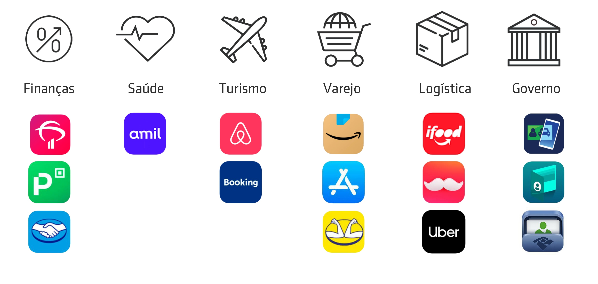

2FA
Autenticação de dois fatores
O 2FA é um procedimento de segurança que garante que serão
necessários 2 fatores únicos para liberação de uma ação. O
primeiro fator é a senha que o usuário e o segundo pode ser
autenticado via token, via detecção de impressão digital,
reconhecimento facial, código enviado via sms, entre outros.
O 2FA permite que você:
• Envie uma senha via SMS, voz ou e-mail para autenticação do usuário.
• Adicione uma camada extra de segurança além da senha pessoal.
• Ofereça maior segurança para usuários
Fortaleça a estratégia de segurança de seu negócio.
Adicionar um número de telefone de recuperação a uma
conta individual pode bloquear até:
100% dos bots automatizados,
99% dos ataques de phishing em massa,
e 66% dos ataques direcionados.
Quem usa?
